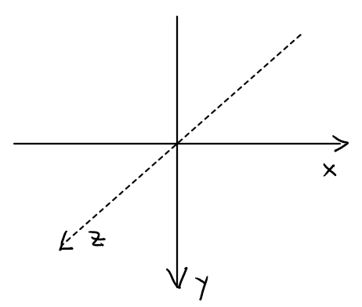

OpenGL (Open Graphics Library) ist eine Spezifikation (API) zur Entwicklung von 2D- und 3D-Computergrafikanwendungen. Der OpenGL-Standard beschreibt etwa 250 Befehle, die die Darstellung komplexer 3D-Szenen in Echtzeit erlauben.
WebGL ist eine Übertragung der OpenGL Standards für Javascript. Three.js ist eine Bibliothek, die diese Standards implementiert.
p5.js enthält Methoden zur einfachen Nutzung von WebGL.
Der Ursprung des 3D-Canvas ist nicht mehr oben links, sondern in der Mitte.
Mit rotateX(), rotateY(), rotateZ() können wir um die Achsen rotieren. rotateZ() entspricht der Rotation in einem 2D-Kontext.
Rotationen um alle Achsen
Es gibt sieben 3D-Primitives: plane, box, sphere, cylinder, cone, ellipsoid, torus
Um ein Objekt an eine bestimmte Stelle zu positionieren, benötigen wir translate().
normalMaterial ist unabhängig vom Licht. Die Oberfläche eines 3D-Primitives setzt sich aus vielen kleinen Dreiecken zusammen. Der Normalenvektor auf dem Dreieck bestimmt die r,g,b - Werte der Färbung. Im Beispiel ist die Oberfläche dann blau, wenn der Normalvektor mit Richtung (0,0,1) auf den Betrachter zeigt.
Die Parameter des ambientMaterial bestimmen, welches Licht das Material reflektieren kann. ambientLight setzt ein gleichmäßiges Umgebungslicht. Im Beispiel wird mit mouseX der Blauanteil des Lichts gesteuert. Ist dieser Null, dann erscheint der Torus schwarz, weil er nur blaues Licht reflektieren kann.
Das directionalLight scheint aus einer Richtung (Quelle ziemlich weit weg, wie die Sonne). Im Beispiel scheint ein rotes directionalLight aus Richtung (-10,0,-7), ein grünes aus Richtung (1,2,-3).
Statt einem Material können wir auch Textures verwenden und die Oberfläche mit einem Bild, einem Film, oder einem Text versehen.